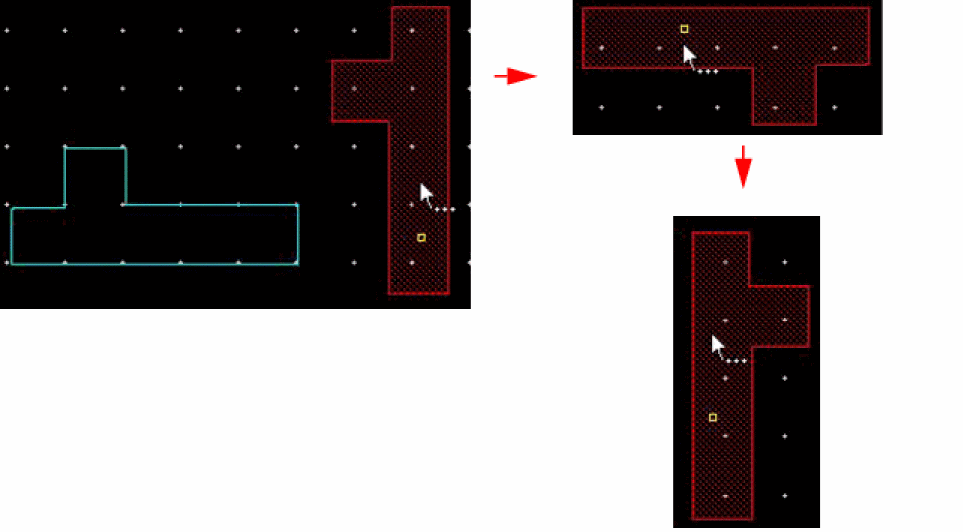

Rotating or Flipping an Object During a Move Operation
To rotate any object in 90-degree increments or to flip an object, you can use the Move, Copy, or Paste command. To rotate most geometric objects to any angle, use the Rotate command.
To rotate or flip an object while using the Move command:
- Choose Edit – Move.
- Select the objects on the canvas.
-
Press
F3to open the Move form. - Click on the canvas to specify the reference point for the move operation.
-
Click the Rotate Left, Rotate Right, Flip Vertical, or Flip Horizontal button in the form, as required, to rotate or flip the objects during the move operation. Continue clicking the buttons to further rotate or flip the objects.
Each time you click a Rotate button, the object rotates 90 degrees clockwise or counterclockwise.
 - Click on the canvas where you want to place the rotated object.
-
Alternatively, use the middle mouse button to rotate or flip the objects.
- To rotate the objects 90 degrees, click the middle mouse button.
-
To flip the objects, press
Shiftand click the middle mouse button.
The objects mirror first along the X axis, then along the Y axis.
To rotate multiple selected objects as a group, use the options on the Rotate form or select the Rotate Around Combined BBox check box in the Layout Editor Options form.
Rotating Objects: Virtuoso Photonics Option
You need the Virtuoso_Photonics_Option license to use the functionality discussed in this section. For information on obtaining the required license, contact your local Cadence representative.
You can rotate an instance by any angle if it has a parameter that can be used for rotation. The value of the cdsRotateInstParam parameter on the instance or master is considered as the rotation parameter. If cdsRotateInstParam is not specified, the value specified in the rotateInstParam environment variable is considered for rotation.
For orthogonal rotation of an instance, the Rotation field on the Attribute tab of the Edit Instance Properties form is updated. For non-orthogonal rotation of an instance, the rotation parameter on the Parameter tab of the Edit Instance Properties form is updated. The rotation parameter is defined by the rotateInstParam environment variable.
Related Topics
Return to top